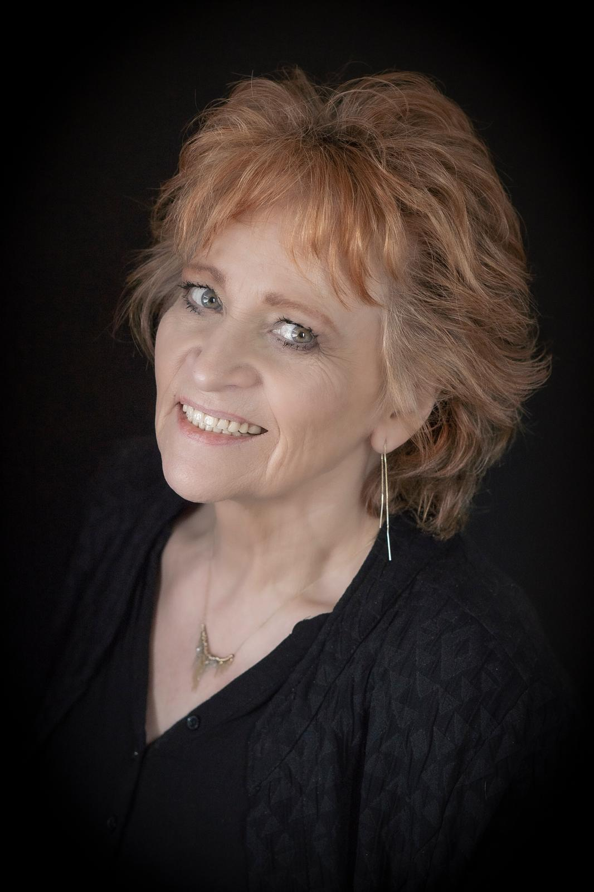

Coach, begeleider en oprichter van OntwikkelOase. Gepassioneerd door mensen en de ruimte die groei vraagt.
Josine Dielissen is de drijvende kracht achter OntwikkelOase. Met meer dan 45 jaar ervaring als coach en begeleider weet ze als geen ander hoe transformatie eruitziet van binnenuit.
Haar aanpak is warm en menselijk , maar ook direct en helder. Ze gelooft niet in kant-en-klare oplossingen, maar in de kracht die al aanwezig is — bij mensen én bij teams. Haar rol is die ruimte te creëren.
Of het nu gaat om een persoonlijk keerpunt, een carrièrevraagstuk of een team dat vastloopt: Josine brengt rust, inzicht en beweging.

"Groei vraagt geen kracht. Groei vraagt ruimte."
— Josine DielissenEchte groei vraagt een veilige basis. Zonder oordeel en met onvoorwaardelijke aanwezigheid creëert Josine een plek waar alles mag zijn wat het is.
Vriendelijk en direct. Josine gelooft in eerlijke spiegels. Niet confronterend, maar uitnodigend om dieper te kijken naar wat er werkelijk speelt.
Ieder mens heeft een uniek verhaal. Josine luistert met oprechte interesse en benadert elk vraagstuk zonder aannames of vooroordelen.
Inzicht is een begin, geen eindpunt. Josine helpt de vertaalslag te maken van bewustwording naar concreet, duurzaam gedrag in het dagelijkse leven.
Mensen groeien sneller en dieper in verbinding met anderen. Josine brengt mensen samen en creëert omgevingen waar leren van elkaar vanzelfsprekend is.
Elke sessie is een ontdekking. Door te werken vanuit kracht en mogelijkheid in plaats van problemen en tekortkomingen, ontstaat echte verandering.
Josine begint haar loopbaan in de HR-wereld en ontdekt al snel haar passie voor menselijke ontwikkeling binnen organisaties.
Na haar coaching-opleiding richt Josine zich volledig op individuele begeleiding. Ze haalt haar ICF-certificering en begeleidt haar eerste coachees.
Josine volgt aanvullende opleidingen in teamcoaching en leiderschapsontwikkeling. Ze werkt met teams in diverse sectoren en merkt de kracht van collectieve groei.
Met de oprichting van OntwikkelOase creëert Josine een plek waar alle vormen van groei samenkomen: een oase voor mensen en organisaties.
OntwikkelOase groeit. Met een bewezen aanpak en een netwerk van tevreden klanten is Josine één van de meest gevraagde coaches in haar vakgebied.
Josine werkt vanuit een eclectische aanpak: ze combineert wetenschappelijke inzichten uit de positieve psychologie, systemisch denken en oplossingsgericht coachen.
Geen vaste formules, wel een heldere structuur. Het traject past zich altijd aan aan de persoon of het team — niet andersom.
De basis van elk gesprek: volledige aanwezigheid en oprechte interesse in jouw verhaal.
Josine gebruikt krachtige vragen die je uitnodigen om dieper te kijken en nieuwe inzichten op te doen.
Samen vertalen we bewustwording naar concrete stappen die passen bij jouw situatie en tempo.
Josine ondersteunt bij het borgen van groei, zodat verandering echt beklijft na het traject.
International Coaching Federation
Bert Hellinger Instituut Nederland
IOOK – Instituut voor Oplossings- en Omgevingsgericht Coachen
Erasmus Universiteit Rotterdam
Universiteit Utrecht
Plan een gratis kennismakingsgesprek van 30 minuten. Geen verplichtingen, wel echte verbinding.
Gratis gesprek plannen